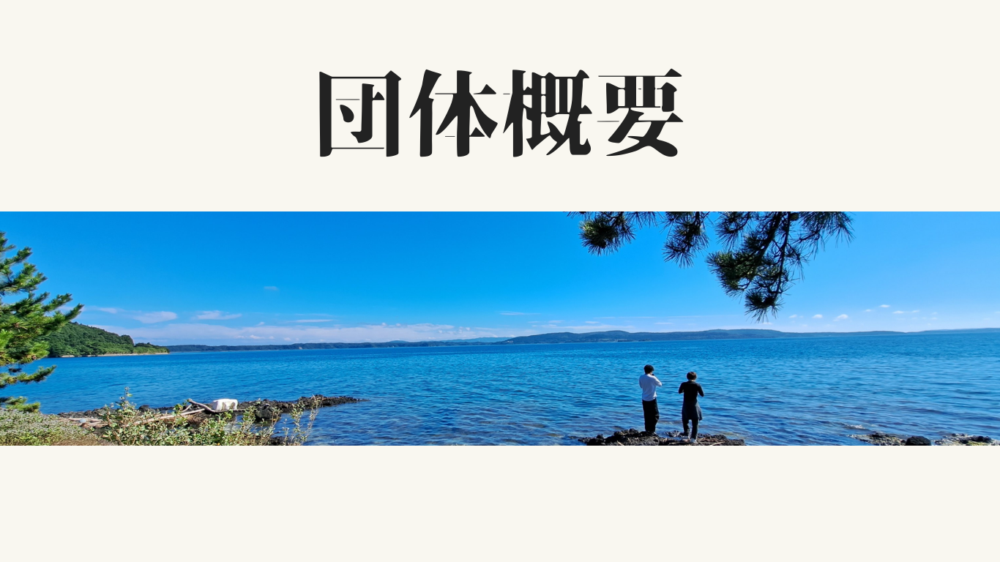

喜び
そよかぜの活動は「相手が喜んでくれること」を一番に考えています。 活動の計画づくりやレポートでの振り返りを通して、 次の活動がもっと喜んでもらえるように工夫を重ねています。

改めまして、学生団体そよかぜ代表のそよかぜ たろうです。
そよかぜは2024年5月に設立された団体です！
活動する人も、活動される人も、関わる人全員が楽しめる活動を目指しています。
能登・東北・関東の3拠点で活動し、喜び・魅力・発信・楽しくの4軸を大切にしています。
聖学院・立正・埼玉県立・日大・中央・東洋・和光・自由の森学園の
7大学1高校のメンバーで構成されています。
そよかぜの活動は「相手が喜んでくれること」を一番に考えています。 活動の計画づくりやレポートでの振り返りを通して、 次の活動がもっと喜んでもらえるように工夫を重ねています。
災害ボランティアという側面だけでなく、 その地域で暮らす人の日常や文化、あたたかさといった 「魅力」にも光を当てています。 被災地＝つらい場所、だけではない姿を伝えていきます。
活動をそよかぜの中だけで完結させず、 学校での報告やイベント出店、SNS などを通して外に届けています。 関東から離れた東北や能登に、ポジティブな関心を持つ人を増やすことが目標です。
根っこにあるのは「楽しく」活動すること。 内輪感をできるだけなくし、初めて来た人でも安心して楽しめる場をつくります。 楽しいからこそ、喜び・魅力・発信の全部がいい循環になります。